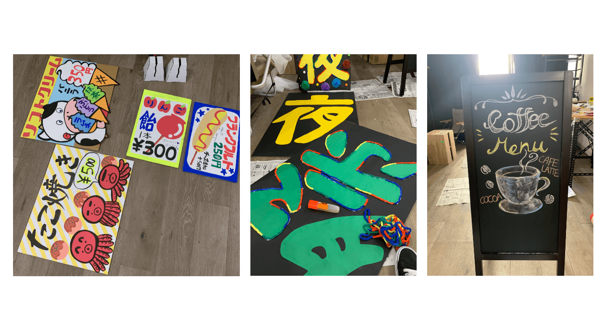
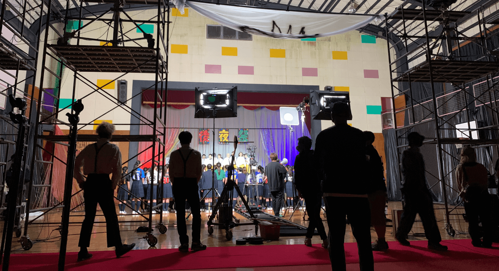

CM制作アシスタント
制作期間:1ヶ月
-
映像

GANMIのMV制作に携わり、YouTubeに動画がアップされました。撮影の一連の流れを体験することができました。
-
美術
美術を主に担当しました。予算が少ない中での制作だったので、手作りできるものは一から制作しました。主にパネル制作、チラシ制作に力を入れました。
-
現場
撮影時は一日の中で撮り切らなければいけなかったので、美術を設置、片付けしながら撮影が進んでいくという流れでした。撮影が回ってくる前に全て準備を完璧にしなければ撮りきれないため時間と体力との戦いでした。無事計画通りに進行することができました。